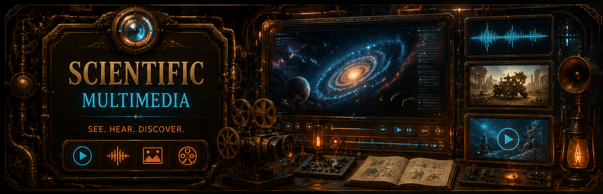

Links To More Resources
USGS Latest Earthquakes
https://earthquake.usgs.gov/earthquakes/mapUSGS Volcano Updates
https://www.usgs.gov/programs/VHP/volcano-updatesGlobal Incident Map - Earthquakes
https://quakes.globalincidentmap.comPacific Northwest Real Time Tremor Map
https://pnsn.org/tremor/mapSmithsonian Volcano Program
https://volcano.si.eduVolcano Discovery - Current Eruptions
https://www.volcanodiscovery.com/volcanoes/today.htmlEarthquakes and Volcanoes Interactive Map - Volcano Discovery
https://earthquakes.volcanodiscovery.comWind Map
https://www.windy.comAnother Wind Map
https://www.ventusky.comWild Fires
https://egp.wildfire.gov/maps/National Weather Service Radar
https://radar.weather.govEarth Nullschool
https://earth.nullschool.netMy Patriot Supply
https://www.mypatriotsupply.comShield Arms
https://shieldarms.comHeaven's Harvest
https://heavensharvest.comRefuge Medical
https://www.refugemedical.comMaster the Disaster (SO)
https://observercourses.podia.com/master-the-disaster-basic https://observercourses.podia.com/master-the-disaster-advancedArk Bunkers
https://arkbunkers.comPermies
https://permies.comCSU Agriculture Resources
https://boulder.extension.colostate.edu/agriculture/Burpee Seeds
https://www.burpee.comSeed Savers Exchange
https://www.seedsavers.orgGardener's Supply Company
https://www.gardeners.comGreenhouse Megastore
https://www.greenhousemegastore.comPastures of Liberty
https://www.pasturesofliberty.comSuspicious Observers Community (SO)
https://www.suspicious0bservers.orgFind Global Survival Communities (SO)
https://www.Solarkillshot.orgAdvanced Disaster Geoscore
https://geoscore.world/HavenBound
https://havenbound.coEthical Skeptic's Website
https://www.theethicalskeptic.comEthical Skeptic on X
https://x.com/ethicalskepticCraig Stone's Website
https://nobulart.comCraig Stone on X
https://x.com/nobulartDavid Sunfellow's Website
https://davidsunfellow.comDavid Sunfellow on X
https://x.com/sunfellowJunho's Website
https://sovrynn.github.ioJunho on X
https://x.com/junhoBTCZacharias on X
https://x.com/zachariasproHashZappa On X
https://x.com/HashZappaIf you have any suggestions for additional resources or links to include, please feel free to contact me through the About/Contact page. I am always looking to expand and update the resource list to provide the most valuable information for visitors.
Curated Educational Media Library
This section prioritizes media from NASA, NOAA, USGS, Smithsonian-linked sources, ESA/Hubble, and Wikimedia Commons records with clear reuse terms. Each card includes a source and license note so the image can be evaluated before reuse in a non-commercial educational context.
NASA / SDO / JWST / Hubble: U.S. government NASA imagery is generally usable for educational and informational purposes when properly credited, unless a specific item says otherwise. NASA media guidance
USGS and NOAA: U.S. federal science agency media is commonly public domain, but cards still point back to the source record whenever possible. USGS credits / NOAA disclaimer
Wikimedia Commons: Heritage-site photography often uses CC BY or CC BY-SA licensing. Attribution and license preservation are required for those cards. Commons reuse guide
Ancient Megalithic Sites
Prominent stone monuments, ceremonial landscapes, engineered terraces, and underground architecture from around the world. These cards are useful for the ancient-history section and visual cross-linking.
Gallery will load when this section enters view.
Volcanic Imagery and Historic Eruptions
Historic eruption photographs, lava fountains, volcanic-island formation, and classic eruption illustrations from public-domain science archives and verified reuse records.
Gallery will load when this section enters view.
Space Imagery
Solar activity, coronagraph events, deep-space nebulae, galaxies, comets, and Earth imagery from NASA, ESA/Hubble, SDO, SOHO, and public science archives.
Gallery will load when this section enters view.
Geophysics and Space Charts
Useful charts and diagrams for explaining faults, focal mechanisms, plate tectonics, solar-cycle behavior, space-weather measurements, electromagnetic observation bands, and current geophysical monitoring products.
Gallery will load when this section enters view.